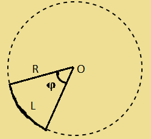
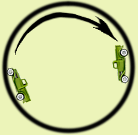

Кинематика
Введение!
Понятие кинематика: Кинематика - раздел механики, изучающий описание и анализ движения тел в пространстве и времени.
Формулы по теме:
1. Путь в равномерном движении: S=vt
Где:
S - Путь (км) v - скорость (км/ч) t -время (часы)
1.1 Из этой формулы также можно вывести скорость и временя:
V=St t= S V
Тело движется со скоростью 20км/ч, какой путь пройдёт тело, за 30 минут?
Дано:
V=20км/ч
t=30мин
Найти: S-?
S=20×0,5=10 (км).
Ответ: 10км.
2. Ускорение - скорость изменения скорости:
a=Vt-V0t
Где:
a - Ускорение (м/с2) Vt - Конечная скорость (км/ч) V0 - Начальная скорость
t - Промежуток времени, за которое совершалось ускорение
Машина движется прямолинейно, известно, что в начальный момент времени скорость машины равна 20км/ч, а через 30 минут скорость изменилась на 90 км/ч, чему равно ускорение?
Дано:
V0=20км/ч
Vt=90км/ч
t=30мин
Найти: a-?
a=90-200,5=140 (км/ч2).
как перевести метр/с смотрите сдесь
Ответ: 140 (км/ч2)
3. Зависимость скорости от времени при равноускоренном движении: Vt=V0+at
Где:
Vt - скорость с течением времени (км/ч) a - ускорение (м/c2)
V0 - начальная скорость t - время (минуты)
Тело движется 30минут с постоянным ускорение 30м/с, определите зависимость скорости тела от времени ?
Дано:
V0=0км/ч
a=30 (м/c2)
t=30мин
Найти:
Vt=?
Переведём все еденицы измерения в СИ: t = 30мин = 0,5ч. По формуле Vt=V0+at получаем:
Vt=0+30×0,5=15 (м/с)
4. Зависимость перемещения от времени при равноускоренном движении: S=v0t+at22
Где:
S - Перемещение с течением времени a - ускорение
V0 - начальная скорость t - время
Мотоцикл начинает движение 40км/ч с постоянным ускорение 20км/ч, через 2 часа мотоцыкл достиг финиша, определите зависимость перемещения мотоцикла от времени?
Дано:
V0=40км/ч
t=2ч
a=20км/ч
Найти:
St=?
По формуле St=v0t+at22 получаем:
St=40×1+20×222= 80 (км)
Ответ: 80 (км)
5.Полезная формула для прямолинейного движения: V2-V02=2Sa
Где:
S - Перемещение тела a - ускорение
V0 - начальная скорость V - скорость.
6.Равномерное движение по окружности - движение тела с постояннной по модулю скоростью, при котором траекторией является окружность.
Величина угла в окружности вычисляется по формуле:
φ=LR
Где:
φ - Угол дуги в радианах L - длина дуги
R - радиус дуги

Радиан "φ" - еденица измерения углов. 1 радиан - центральный угол, опирающийся на дугу, длина которого равна радиусу.
6.1.Угловая скорость - велечина, равная отношению угла поворота радиуса, на котором находится вращающаяся точка, к промежутку времени, за которое произошол этот поворот:
ω=φt
Где:
ω - Угловая скорость φ - Угол поворота в радианах
t - Время
7.Центростримительное ускорение - ускорение тела при его равномерном движение по окружности:
a=ω2R=V2R
Где:
a - Ускорение (м/с2) V - модуль вектора скорости (M/C)
R - Радиус окружности ω - Угловая скорость (1/с)
Какую скорость нужно развить машине ,чтобы она могла вращаться по кругу, радиусом 25метров, расположенный вертикально, и не упала?
Дано:
R=25 метр.
Найти: V-?
9,8< V2R
9,8< V225
V>15,6(м/с)
Переведём в км/ч, как переводить смотрите здесь.
Получаем:  15.6(м/с)=56.16 (км/ч)
Ответ: 56,16 (км/ч)